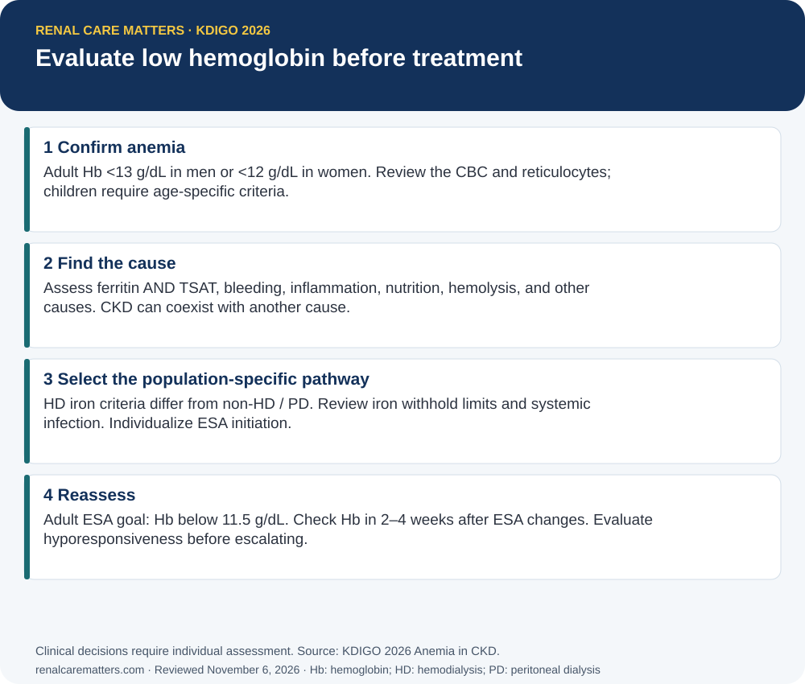
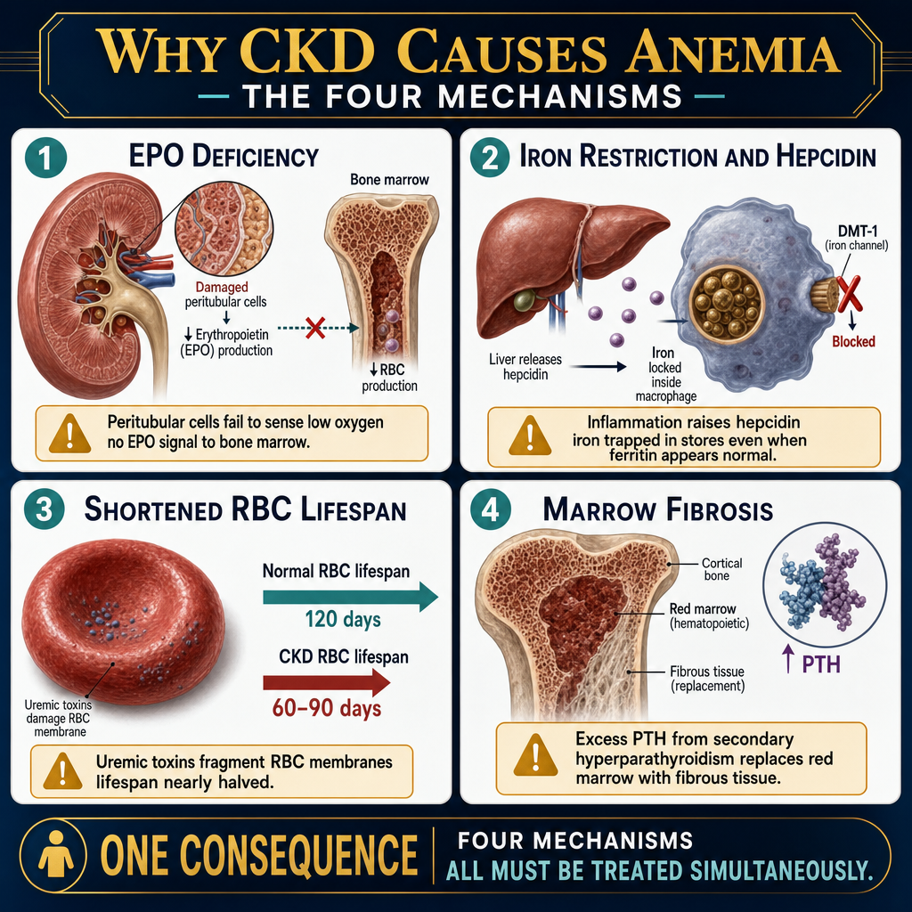
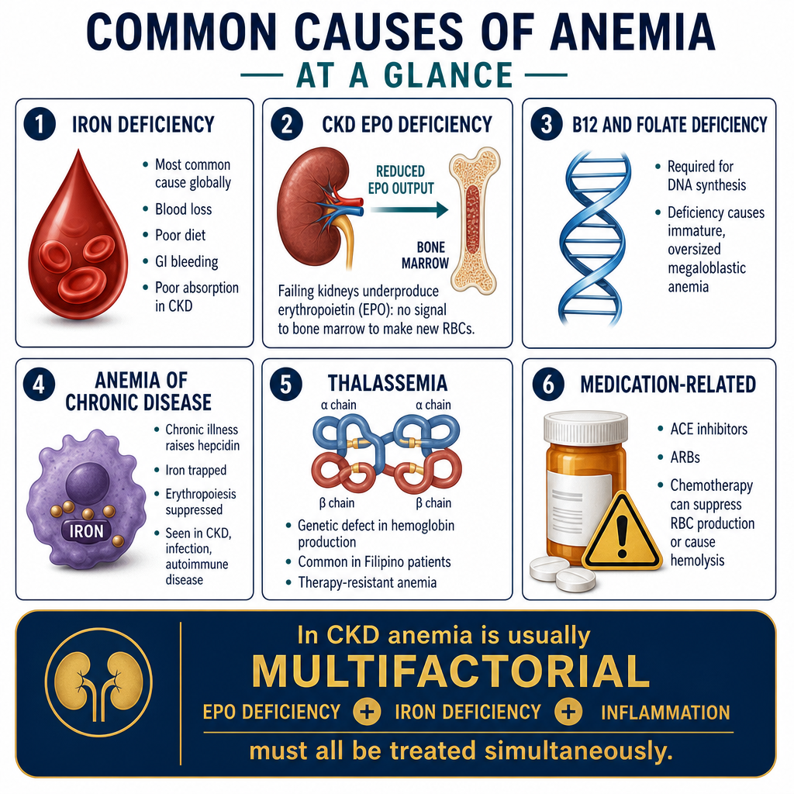
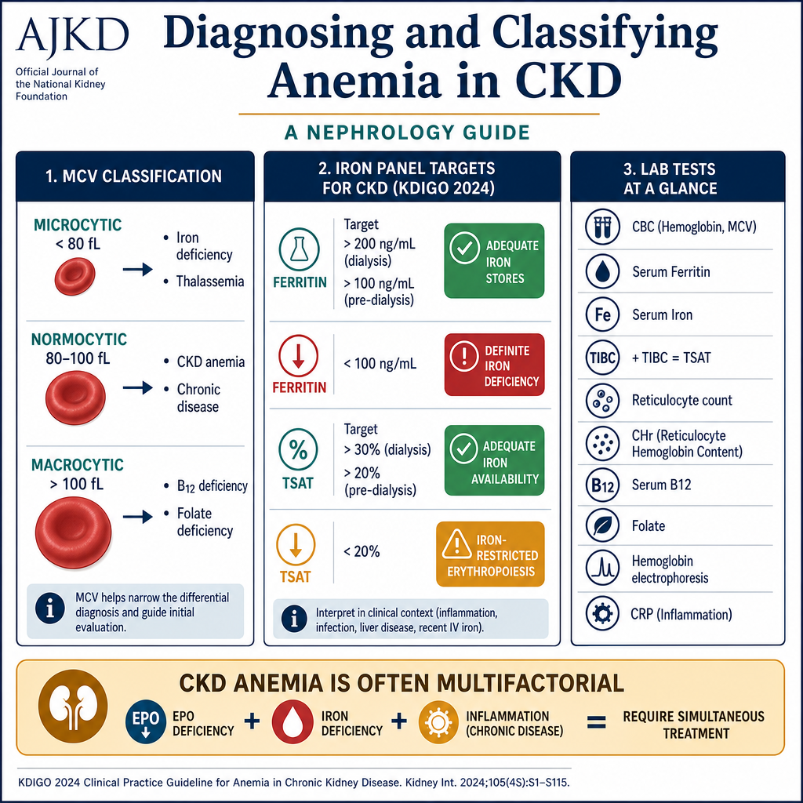
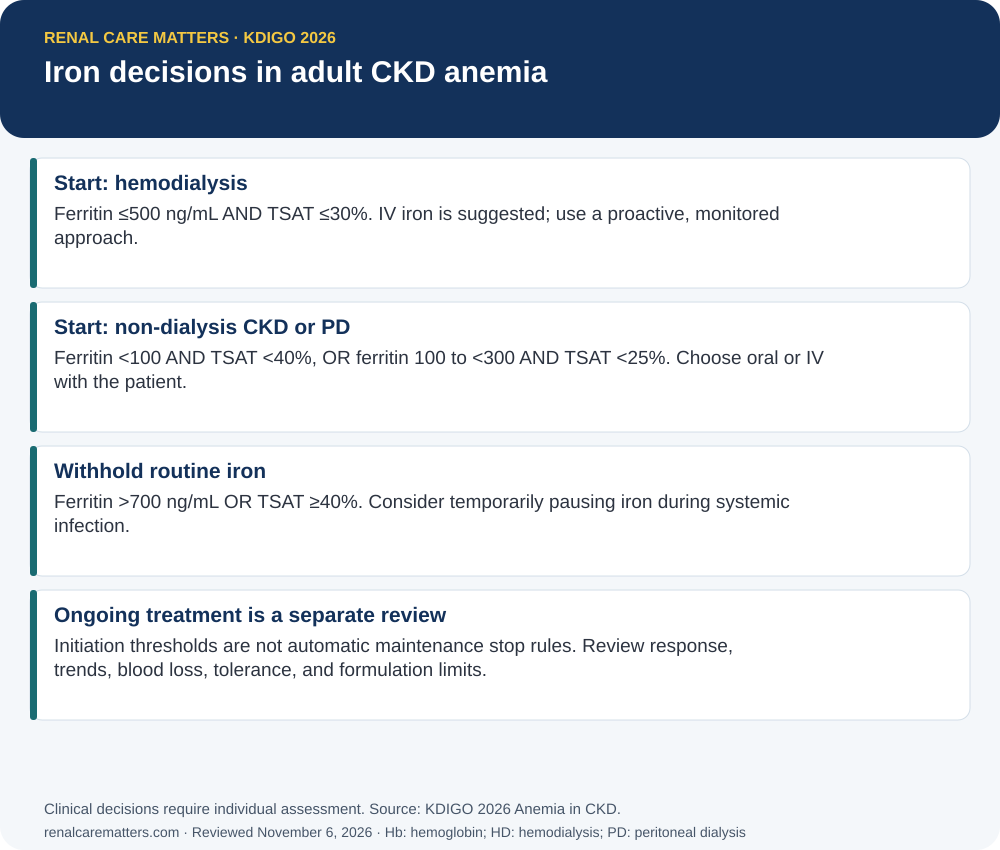
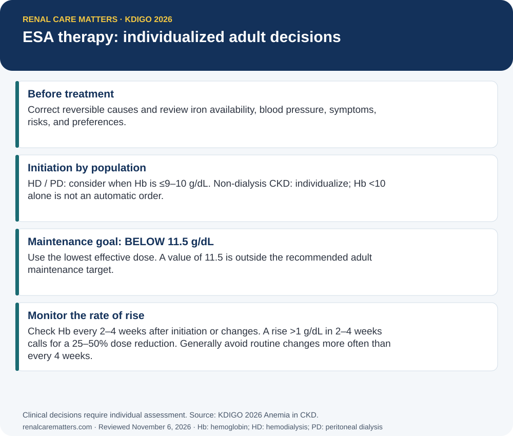
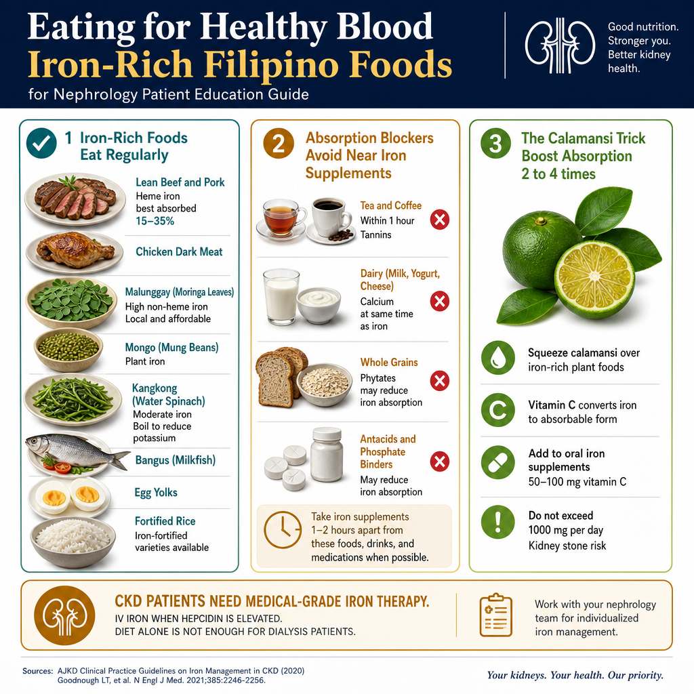

CKD anemia content reviewed November 6, 2026 against KDIGO 2026. See the population-specific KDIGO 2026 rules.
What Is Anemia — and Why Does It Matter?Ano ang Anemia — at Bakit Ito Mahalaga?Unsa ang Anemia — ug Nganong Importante Kini? Ano ing Anemia — at Bakit Ini Importante?

Anemia means your blood does not carry enough oxygen to meet your body's needs. Red blood cells contain hemoglobin — the protein that picks up oxygen in the lungs and delivers it to every organ. When hemoglobin falls too low, every organ suffers — especially the heart (which works harder) and the kidneys (which need oxygen to maintain filtration).Ang anemia ay nangangahulugang ang inyong dugo ay hindi nagdadala ng sapat na oxygen para matugunan ang pangangailangan ng katawan. Ang mga pulang selula ng dugo ay naglalaman ng hemoglobin — ang protina na kumukuha ng oxygen sa baga at naghahatid nito sa bawat organo. Kapag masyadong bumaba ang hemoglobin, nagdurusa ang bawat organo — lalo na ang puso (na nagtatrabaho nang mas malakas) at ang mga bato (na nangangailangan ng oxygen upang mapanatili ang pagsasala).Ang anemia nagpasabot nga ang inyong dugo dili magdala og igo nga oxygen aron matubag ang mga pangangailangan sa lawas. Ang mga pulang selula sa dugo adunay hemoglobin — ang protina nga mokuha og oxygen sa baga ug maghatod niini sa matag organo. Kon mubaba kaayo ang hemoglobin, mag-antos ang matag organo — ilabi na ang kasingkasing (nga nagbuhat og mas kusog) ug ang mga kidney (nga nanginahanglan og oxygen aron mapadayon ang pagsala). Ing anemia ya nangangahulugang ing inyu daya ya ali nagdadala ning sapat a oxygen para matugunan ing pangangailangan ning bangkî. Ing deng pulang selula ning daya ya naglalaman ning hemoglobin — ing protina a kumukuha ning oxygen king baga at naghahatid nini king bawat organo. Nung masyadong bumaba ing hemoglobin, nagdurusa ing bawat organo — lalo a ing pusu (a nagtatrabaho nang mas malakas) at ing deng batu (a nangangailangan ning oxygen upang mapanatili ing pagsasala).
In adults, anemia means hemoglobin (Hb) below 13 g/dL in men or 12 g/dL in women. Children need age-specific criteria. Diagnosis is separate from the treatment goal: adults taking an ESA should have an individualized Hb goal below 11.5 g/dL. Children require individualized specialist targets.
Sa adult, anemia ang hemoglobin (Hb) na mas mababa sa 13 g/dL sa lalaki o 12 g/dL sa babae. Sa bata, ayon sa edad ang pamantayan. Magkaiba ang diagnosis at layunin ng paggamot: sa adult na naka-ESA, indibidwal ang layunin at mas mababa sa 11.5 g/dL. Kailangan ng espesyalistang magtakda ng layunin para sa bata.
Sa hamtong, anemia ang hemoglobin (Hb) nga ubos sa 13 g/dL sa lalaki o 12 g/dL sa babaye. Sa bata, ang sukdanan nagdepende sa edad. Lahi ang diagnosis ug tumong sa pagtambal: sa hamtong nga nag-ESA, ipahaom ang tumong ug ipabilin nga ubos sa 11.5 g/dL. Ang espesyalista motakda sa tumong sa bata.
King adult, anemia ing hemoglobin (Hb) a mas mababa king 13 g/dL king lalaki o 12 g/dL king babae. King anak, agpang king edad ing pamantayan. Miyayaliwa ing diagnosis at layunin ning gamutan: king adult a maki-ESA, me-personalize ing layunin at mas mababa king 11.5 g/dL. Ing espesyalista ing magtakda ning layunin para king anak.

This illustration shows the four main reasons damaged kidneys lead to anemia: too little EPO (erythropoietin) hormone, iron locked away by hepcidin, red blood cells that wear out faster, and bone marrow that makes fewer cells.
CKD anemia is multifactorial — EPO deficiency, iron-restricted erythropoiesis, and shortened RBC (red blood cell) survival all contribute simultaneously. All three must be addressed.Ang anemia sa CKD ay may maraming dahilan — ang kakulangan ng EPO, ang iron-restricted erythropoiesis, at ang pinaikling buhay ng RBC ay sabay-sabay na nag-aambag. Ang lahat ng tatlo ay dapat tugunan.Ang anemia sa CKD adunay daghang hinungdan — ang kakulang sa EPO, ang iron-restricted erythropoiesis, ug ang gipamubo nga kinabuhi sa RBC nagambibit tanan sa dungan. Ang tanan nga tulo kinahanglan nga sulbaron. Ing anemia king CKD ya atin dacal a dahilan — ing kakulangan ning EPO, ing iron-restricted erythropoiesis, at ing pinaikling biye ning RBC ya sabay-sabay a nag-aambag. Ing amin ning tatlo ya dapat tugunan.
Symptoms of anemiaMga sintomas ng anemiaMga sintomas sa anemia Deng sintomas ning anemia
Persistent fatigue and weakness even with rest, shortness of breath on mild exertion, palpitations or rapid heartbeat, pale skin, pale inner eyelids (conjunctival pallor), dizziness or light-headedness on standing, difficulty concentrating, cold intolerance, and reduced exercise capacity.Patuloy na pagod at kahinaan kahit may pahinga, igsi ng hininga sa magaang na pagsisikap, palpitasyon o mabilis na tibok ng puso, maputlang balat, maputlang panloob na talukap ng mata (conjunctival pallor), pagkahilo o pag-alinlangan sa pagtayo, kahirapan sa konsentrasyon, hindi pagtitiis sa lamig, at nabawasang kakayahan sa ehersisyo.Padayon nga pagkaluya ug kahuyang bisan may pahinga, kahapdos sa paghinga sa magaan nga paningkamot, palpitasyon o paspas nga tibok sa kasingkasing, mapulaw nga panit, mapulaw nga sulod sa talukap sa mata (conjunctival pallor), pagkahilo o pag-alingawngaw sa pagtindog, kalisod sa konsentrasyon, dili pagpas-an sa kabugnaw, ug nabuwang nga kakayahan sa ehersisyo. Patuloy a pagod at kahinaan kahit atin pahinga, igsi ning hininga king magaang a pagsisikap, palpitasyon o mabilis a tibok ning pusu, maputlang balat, maputlang panloob a talukap ning mata (conjunctival pallor), pagkahilo o pag-alinlangan king pagtayo, kahirapan king konsentrasyon, ali pagtitiis king lamig, at nabawasang kakayahan king ehersisyo.
Why anemia is dangerous in CKDBakit mapanganib ang anemia sa CKDNganong delikado ang anemia sa CKD Bakit mapanganib ing anemia king CKD
The heart compensates for anemia by beating faster and pumping more blood — chronic compensation causes left ventricular hypertrophy and eventual heart failure. In dialysis patients, anemia is independently associated with increased cardiovascular mortality, hospitalizations, and reduced quality of life.Ang puso ay nagbabayad para sa anemia sa pamamagitan ng mas mabilis na pagtibok at pagpump ng mas maraming dugo — ang patuloy na pagbabayad ay nagdudulot ng left ventricular hypertrophy at kalaunan ay pagpalya ng puso. Sa mga pasyenteng nasa dialysis, ang anemia ay independyenteng nauugnay sa pagtaas ng cardiovascular mortality, mga hospitalisasyon, at nabawasang kalidad ng buhay.Ang kasingkasing nagbayad alang sa anemia pinaagi sa mas paspas nga pagtibok ug pagpump sa mas daghang dugo — ang kronikong pagbayad nagdala sa left ventricular hypertrophy ug sa katapusan ay pagpaluya sa kasingkasing. Sa mga pasyente nga nag-dialysis, ang anemia adunay independyenteng kalabotan sa dugang cardiovascular mortality, mga hospitalisasyon, ug nabuwang nga kalidad sa kinabuhi. Ing pusu ya nagbabayad para king anemia king pamamagitan ning mas mabilis a pagtibok at pagpump ning mas dacal a daya — ing patuloy a pagbabayad ya nagdudulot ning left ventricular hypertrophy at kalaunan ya pagpalya ning pusu. King deng pasyenteng nasa dialysis, ing anemia ya independyenteng nauugnay king pagtaas ning cardiovascular mortality, deng hospitalisasyon, at nabawasang kalidad ning biye.
Common Causes of AnemiaMga Karaniwang Sanhi ng AnemiaMga Kasagarang Hinungdan sa Anemia Deng Karaniwang Sanhi ning Anemia

This infographic outlines the common causes of anemia, including iron deficiency, low EPO from kidney disease, vitamin B12 or folate deficiency, anemia of chronic disease, thalassemia, and certain medications.
Iron deficiencyKakulangan ng ironKakulang sa iron Kakulangan ning iron
Most common cause globally. Blood loss (menstruation, GI bleeding), poor dietary intake, or poor absorption (gastritis, celiac).Pinaka-karaniwang sanhi sa buong mundo. Pagkawala ng dugo (regla, GI bleeding), mahinang pagkain, o mahinang pagsipsip (gastritis, celiac).Labing kasagarang hinungdan sa tibuok kalibutan. Pagkawala sa dugo (regla, GI bleeding), gamay nga pagkaon, o gamay nga pagsuyop (gastritis, celiac). Pinaka-karaniwang sanhi king buong mundo. Pagkaala ning daya (regla, GI bleeding), mahinang pamangan, o mahinang pagsipsip (gastritis, celiac).
CKD / EPO deficiencyCKD / Kakulangan ng EPOCKD / Kakulang sa EPO CKD / Kakulangan ning EPO
Failing kidneys produce insufficient erythropoietin — the hormone that signals bone marrow to make red blood cells.Ang mga bagsak na bato ay gumagawa ng kulang na erythropoietin — ang hormon na nagbibigay-senyal sa bone marrow na gumawa ng mga pulang selula ng dugo.Ang mga napakyas nga kidney nagpatunghag kulang nga erythropoietin — ang hormon nga nag-signal sa bone marrow nga maghimo og mga pulang selula sa dugo. Ing deng bagsak a batu ya gumagawa ning kulang a erythropoietin — ing hormon a nagbibigay-senyal king bone marrow a gumawa ning deng pulang selula ning daya.
B12 / Folate deficiencyKakulangan ng B12 / FolateKakulang sa B12 / Folate Kakulangan ning B12 / Folate
Required for DNA synthesis in red cell precursors. Deficiency causes large, immature cells (megaloblastic anemia).Kinakailangan para sa DNA synthesis sa mga precursor ng pulang selula. Ang kakulangan ay nagdudulot ng malalaki, hindi pa ganap na mga selula (megaloblastic anemia).Gikinahanglan alang sa DNA synthesis sa mga precursor sa pulang selula. Ang kakulang nagdala sa dagko, hilaw pa nga mga selula (megaloblastic anemia). Kinakailangan para king DNA synthesis king deng precursor ning pulang selula. Ing kakulangan ya nagdudulot ning malalaki, ali pa ganap a deng selula (megaloblastic anemia).
Anemia of chronic diseaseAnemia ng kronikong sakitAnemia sa kroniko nga sakit Anemia ning kronikong sakit
Inflammation from chronic illness (infection, autoimmune, cancer) sequesters iron and suppresses erythropoiesis via hepcidin.Ang pamamaga mula sa kronikong sakit (impeksyon, autoimmune, kanser) ay nagtatago ng iron at pumipigil sa erythropoiesis sa pamamagitan ng hepcidin.Ang pamamaga gikan sa kroniko nga sakit (impeksyon, autoimmune, kanser) nagtago sa iron ug nagpugong sa erythropoiesis pinaagi sa hepcidin. Ing pamamaga mula king kronikong sakit (impeksyon, autoimmune, kanser) ya nagtatago ning iron at pumipigil king erythropoiesis king pamamagitan ning hepcidin.
ThalassemiaThalassemiaThalassemia Thalassemia
Genetic disorder causing defective hemoglobin production. Common in Southeast Asia including the Philippines. Causes microcytic, hypochromic anemia resistant to iron therapy.Genetic disorder na nagdudulot ng depektibong produksyon ng hemoglobin. Karaniwan sa Timog-silangang Asya kasama ang Pilipinas. Nagdudulot ng microcytic, hypochromic anemia na lumalaban sa iron therapy.Genetic disorder nga nagdala sa depektibong produksyon sa hemoglobin. Kasagarang makita sa Timog-sidlakang Asya lakip ang Pilipinas. Nagdala sa microcytic, hypochromic anemia nga nagbatok sa iron therapy. Genetic disorder a nagdudulot ning depektibong produksyon ning hemoglobin. Karaniwan king Timog-silangang Asya kasama ing Pilipinas. Nagdudulot ning microcytic, hypochromic anemia a lumalaban king iron therapy.
Medication-relatedKaugnay sa gamotMay kalabotan sa tambal Kaugnay king gamut
ACE inhibitors, ARBs (angiotensin receptor blockers), immunosuppressants, and certain antibiotics can suppress red cell production or cause hemolysis.Ang ACE inhibitors, ARBs, immunosuppressants, at ilang antibiotics ay maaaring pigilan ang produksyon ng pulang selula o magdulot ng hemolysis.Ang ACE inhibitors, ARBs, immunosuppressants, ug pipila ka antibiotics mahimong pugngan ang produksyon sa pulang selula o makapahimong hemolysis. Ing ACE inhibitors, ARBs, immunosuppressants, at ilang antibiotics ya maaaring pigilan ing produksyon ning pulang selula o magdulot ning hemolysis.
Most CKD anemia is multifactorialAng karamihang anemia sa CKD ay may maraming dahilanAng kadaghanan sa anemia sa CKD adunay daghang hinungdan Ing karamihang anemia king CKD ya atin dacal a dahilan
In a CKD or dialysis patient, anemia is rarely from a single cause. The most common combination is EPO deficiency + iron deficiency + chronic inflammation — all three must be addressed simultaneously. Treating EPO deficiency alone without ensuring iron adequacy is a common cause of ESA (erythropoiesis-stimulating agent) therapy failure.Sa isang pasyenteng may CKD o nasa dialysis, ang anemia ay bihirang manggaling sa isang dahilan lamang. Ang pinakakaraniwang kombinasyon ay kakulangan ng EPO + kakulangan ng iron + kronikong pamamaga — ang lahat ng tatlo ay dapat tugunan nang sabay-sabay. Ang paggamot lamang sa kakulangan ng EPO nang hindi tinitiyak ang sapat na iron ay isang karaniwang sanhi ng pagkabigo ng ESA therapy.Sa usa ka pasyente nga may CKD o nag-dialysis, ang anemia panagsa ra gikan sa usa ka hinungdan lamang. Ang labing kasagarang kombinasyon mao ang kakulang sa EPO + kakulang sa iron + kroniko nga pamamaga — ang tanan nga tulo kinahanglan nga sulbaron sa dungan. Ang pagtambal lamang sa kakulang sa EPO nga wala masiguro ang sapat nga iron usa ka kasagarang hinungdan sa pagkapakyas sa ESA therapy. King metung a pasyenteng atin CKD o nasa dialysis, ing anemia ya bihirang manggaling king metung a dahilan lamang. Ing pinakakaraniwang kombinasyon ya kakulangan ning EPO + kakulangan ning iron + kronikong pamamaga — ing amin ning tatlo ya dapat tugunan nang sabay-sabay. Ing paggamut lamang king kakulangan ning EPO nang ali tinitiyak ing sapat a iron ya metung a karaniwang sanhi ning pagkabigo ning ESA therapy.
Why CKD Causes Anemia — The MechanismBakit Nagdudulot ng Anemia ang CKD — Ang MekanismoNganong Nagdala og Anemia ang CKD — Ang Mekanismo Bakit Nagdudulot ning Anemia ing CKD — Ing Mekanismo
Erythropoietin (EPO) deficiency — the primary driverKakulangan ng Erythropoietin (EPO) — ang pangunahing dahilanKakulang sa Erythropoietin (EPO) — ang panguna nga hinungdan Kakulangan ning Erythropoietin (EPO) — ing pangunahing dahilan
The peritubular cells of the kidney sense oxygen tension and produce erythropoietin in response to hypoxia. As kidney tissue is lost in CKD, EPO production falls proportionally. Without EPO, the bone marrow receives no signal to produce new red blood cells — existing cells age and die without replacement, causing progressive anemia.Ang mga peritubular cell ng bato ay nakakakita ng oxygen tension at gumagawa ng erythropoietin bilang tugon sa hypoxia. Habang nawawala ang tissue ng bato sa CKD, ang produksyon ng EPO ay bumababa nang proporsyonal. Nang wala ang EPO, ang bone marrow ay walang natatanggap na senyal para gumawa ng bagong mga pulang selula ng dugo — ang mga kasalukuyang selula ay tumatanda at namamatay nang walang kapalit, na nagdudulot ng progresibong anemia.Ang mga peritubular cell sa kidney nakabati sa oxygen tension ug nagpatunghag erythropoietin isip tubag sa hypoxia. Samtang mawala ang tissue sa kidney sa CKD, ang produksyon sa EPO nag-ubos sa proporsyon. Kung wala ang EPO, ang bone marrow walay madawat nga signal aron maghimo og bag-ong mga pulang selula sa dugo — ang mga naanaa nga selula nag-edad ug namatay nga walay kapuli, nagdala sa progresibong anemia. Ing deng peritubular cell ning batu ya nakakakita ning oxygen tension at gumagawa ning erythropoietin bilang tugon king hypoxia. Habang nawawala ing tissue ning batu king CKD, ing produksyon ning EPO ya bumababa nang proporsyonal. Nang ala ing EPO, ing bone marrow ya alang natatanggap a senyal para gumawa ning bagong deng pulang selula ning daya — ing deng kasalukuyang selula ya tumatanda at namamatay nang alang kapalit, a nagdudulot ning progresibong anemia.
Iron deficiency — absolute and functionalKakulangan ng iron — ganap at functionalKakulang sa iron — absoluto ug functional Kakulangan ning iron — ganap at functional
CKD patients lose iron through the dialysis circuit (blood remaining in tubing), frequent blood draws, and GI bleeding from uremic platelet dysfunction. Additionally, inflammation raises hepcidin — a hormone that blocks iron release from stores even when ferritin appears adequate. This pattern is called iron-restricted erythropoiesis (not enough iron reaching the marrow despite apparently adequate stores). In hemodialysis it often responds better to IV iron; in non-dialysis CKD, oral or IV iron can both be reasonable and the choice is individualized. Note that a rise in hemoglobin after IV iron does not by itself prove iron deficiency.Ang mga pasyenteng may CKD ay nawawalan ng iron sa pamamagitan ng dialysis circuit (dugo na nananatili sa tubing), madalas na pagkuha ng dugo, at GI bleeding mula sa uremic platelet dysfunction. Bukod dito, ang pamamaga ay nagpapataas ng hepcidin — isang hormon na humahadlang sa pagpapalabas ng iron mula sa mga imbakan kahit na tila sapat ang ferritin. Ang pattern na ito ay tinatawag na iron-restricted erythropoiesis (kulang ang iron na umaabot sa marrow kahit tila sapat ang imbak). Sa hemodialysis, madalas itong mas tumutugon sa IV iron; sa non-dialysis CKD, maaaring parehong makatwiran ang oral o IV iron at isinasapersonal ang pagpili. Tandaan: ang pagtaas ng hemoglobin pagkatapos ng IV iron ay hindi nagpapatunay mag-isa ng kakulangan sa iron.Ang mga pasyente nga may CKD nawad-an og iron pinaagi sa dialysis circuit (dugo nga nagpabilin sa tubing), kanunay nga pagkuha sa dugo, ug GI bleeding gikan sa uremic platelet dysfunction. Dugang pa, ang pamamaga nagpataas sa hepcidin — usa ka hormon nga nagpugong sa pagpagawas sa iron gikan sa mga imbakan bisan kung tila sapat ang ferritin. Kini nga pattern gitawag nga iron-restricted erythropoiesis (kulang ang iron nga moabot sa marrow bisan pa og tila igo ang stores). Sa hemodialysis, kasagaran mas motubag kini sa IV iron; sa non-dialysis CKD, mahimong pareho nga makatarunganon ang oral o IV iron ug ang pagpili gipahiangay sa tawo. Timan-i: ang pagsaka sa hemoglobin human sa IV iron dili magpamatuod nga mag-inusara sa kakulang sa iron. Ing deng pasyenteng atin CKD ya nawawalan ning iron king pamamagitan ning dialysis circuit (daya a nananatili king tubing), madalas a pagkuha ning daya, at GI bleeding mula king uremic platelet dysfunction. Bukod dini, ing pamamaga ya nagpapataas ning hepcidin — metung a hormon a humahadlang king pagpapalabas ning iron mula king deng imbakan kahit a tila sapat ing ferritin. Ing pattern a ini ya ausan dang iron-restricted erythropoiesis (kulang ing iron a datang king marrow kahit tila sapat ing imbak). King hemodialysis, madalas ini mas tumutugon king IV iron; king non-dialysis CKD, malyaring parehong makatwiran ing oral o IV iron at me-personalize ing pamamili. Tandaan: ing pagtaas ning hemoglobin kaibat ning IV iron ya ali nagpapatunay mag-isa ning kakulangan king iron.
Shortened red blood cell survivalPinaikling buhay ng pulang selula ng dugoGipamubo nga kinabuhi sa pulang selula sa dugo Pinaikling biye ning pulang selula ning daya
Uremic toxins damage red blood cell membranes, shortening their lifespan from the normal 120 days to as little as 60–90 days. Even with adequate EPO and iron, the bone marrow cannot produce cells fast enough to replace those being destroyed — worsening the anemia.Ang mga uremic toxin ay nagpapasama ng mga lamad ng pulang selula ng dugo, pinaikli ang kanilang buhay mula sa normal na 120 araw hanggang 60–90 araw lamang. Kahit may sapat na EPO at iron, ang bone marrow ay hindi makapaggawa ng mga selula nang mabilis upang mapalitan ang mga nasisira — nagpapalubha ng anemia.Ang mga uremic toxin nagdaot sa mga lamad sa pulang selula sa dugo, gipamubo ang ilang kinabuhi gikan sa normal nga 120 ka adlaw ngadto sa 60–90 ka adlaw lamang. Bisan may igo nga EPO ug iron, ang bone marrow dili makahimo og mga selula nga paspas aron mapuli ang mga ginadaot — nagpagrabe sa anemia. Ing deng uremic toxin ya nagpapasama ning deng lamad ning pulang selula ning daya, pinaikli ing kanilang biye mula king normal a 120 aldo anggang 60–90 aldo lamang. Kahit atin sapat a EPO at iron, ing bone marrow ya ali makapaggawa ning deng selula nang mabilis upang mapalitan ing deng nasisira — nagpapalubha ning anemia.
Secondary hyperparathyroidism — bone marrow fibrosisSecondary hyperparathyroidism — fibrosis ng bone marrowSecondary hyperparathyroidism — fibrosis sa bone marrow Secondary hyperparathyroidism — fibrosis ning bone marrow
Severely elevated PTH (parathyroid hormone) causes marrow fibrosis (osteitis fibrosa cystica) — replacing the normal marrow where red cells are made with fibrous tissue. This form of anemia responds poorly to EPO and iron — it requires control of PTH through active vitamin D, phosphate binders, and sometimes parathyroidectomy.Ang matinding pagtaas ng PTH ay nagdudulot ng marrow fibrosis (osteitis fibrosa cystica) — pinapalitan ang normal na marrow kung saan ginagawa ang mga pulang selula ng fibrous tissue. Ang anyang ito ay mahinang tumutugon sa EPO at iron — nangangailangan ito ng kontrol sa PTH sa pamamagitan ng active vitamin D, phosphate binders, at minsan parathyroidectomy.Ang grabeng pagtaas sa PTH nagdala sa marrow fibrosis (osteitis fibrosa cystica) — nagpuli sa normal nga marrow diin gihimo ang mga pulang selula pinaagi sa fibrous tissue. Kining matang sa anemia mahinay motubag sa EPO ug iron — nanginahanglan kini og kontrol sa PTH pinaagi sa active vitamin D, phosphate binders, ug usahay parathyroidectomy. Ing matinding pagtaas ning PTH ya nagdudulot ning marrow fibrosis (osteitis fibrosa cystica) — pinapalitan ing normal a marrow nung saan ginagawa ing deng pulang selula ning fibrous tissue. Ing anyang ini ya mahinang tumutugon king EPO at iron — nangangailangan ini ning kontrol king PTH king pamamagitan ning active vitamin D, phosphate binders, at misan parathyroidectomy.
Diagnosing and Classifying AnemiaPag-diagnose at Pag-uuri ng AnemiaPag-diagnose ug Pag-klase sa Anemia Pag-diagnose at Pag-uuri ning Anemia

This infographic explains how anemia in kidney disease is diagnosed and classified, using red cell size (MCV) categories and iron blood tests such as ferritin and transferrin saturation (TSAT).
Two KDIGO 2026 terms worth knowingDalawang termino ng KDIGO 2026 na dapat malamanDuha ka termino sa KDIGO 2026 nga angay mahibaloanAdwang termino ning KDIGO 2026 a dapat balu
Systemic iron deficiency means both circulating iron AND stored iron are low. Iron-restricted erythropoiesis means there is not enough circulating iron reaching the marrow despite apparently adequate stores — driven by inflammation and hepcidin, and by ESA-driven iron use. Ferritin and TSAT are the two markers used to tell these apart. They are imperfect (ferritin also rises with inflammation) but remain the principal trial-tested measures. Importantly, a rise in hemoglobin after IV iron does not by itself prove that iron deficiency was the problem.Ang systemic iron deficiency ay nangangahulugang mababa ang parehong umiikot (circulating) na iron AT nakaimbak na iron. Ang iron-restricted erythropoiesis ay nangangahulugang kulang ang umiikot na iron na umaabot sa marrow kahit tila sapat ang imbak — dulot ng pamamaga at hepcidin, at ng paggamit ng iron dahil sa ESA. Ang ferritin at TSAT ang dalawang marker na ginagamit upang pag-ibahin ang mga ito. Hindi sila perpekto (tumataas din ang ferritin sa pamamaga) ngunit nananatiling pangunahing sinubok-sa-pananaliksik na sukatan. Mahalaga: ang pagtaas ng hemoglobin pagkatapos ng IV iron ay hindi nagpapatunay mag-isa na kakulangan sa iron ang problema.Ang systemic iron deficiency nagpasabot nga ubos ang circulating iron UG stored iron. Ang iron-restricted erythropoiesis nagpasabot nga kulang ang circulating iron nga moabot sa marrow bisan tuod og tila igo ang stores — tungod sa pamamaga ug hepcidin, ug sa paggamit sa iron tungod sa ESA. Ang ferritin ug TSAT ang duha ka marker nga gigamit aron mailhan kini. Dili sila hingpit (ang ferritin mosaka usab sa pamamaga) apan nagpabilin nga panguna nga na-trial nga sukdanan. Importante: ang pagsaka sa hemoglobin human sa IV iron dili magpamatuod nga mag-inusara nga kakulang sa iron ang problema. Ing systemic iron deficiency ya buri nang sabian mababa ing parehong circulating a iron AT nakaimbak a iron. Ing iron-restricted erythropoiesis ya buri nang sabian kulang ing circulating a iron a datang king marrow kahit tila sapat ing imbak — dulut ning pamamaga at hepcidin, at ning pamangamit ning iron uli ning ESA. Ing ferritin at TSAT ing adwang marker a gagamitan para miyayaliwa la deti. Ali la perpektu (tutas mu naman ing ferritin king pamamaga) dapot manatili lang pangunang me-trial a sukatan. Importante: ing pagtaas ning hemoglobin kaibat ning IV iron ya ali nagpapatunay mag-isa a kakulangan king iron ing problema.
| TestPagsusuriPagsusiha Pagsusuri | What it identifiesAno ang natutukoy nitoUnsa ang natino niini Ano ing natutukoy nini | Key values to noteMahahalagang halaga na dapat tandaanMga importanteng kantidad nga hinumdoman Mahahalagang halaga a dapat tandaan |
|---|---|---|
| Hemoglobin (Hgb)Hemoglobin (Hgb)Hemoglobin (Hgb) Hemoglobin (Hgb) | Severity of anemiaKalubhaan ng anemiaGrabe nga anemia Kalubhaan ning anemia | CKD target 100–115 g/L. <80 = severe anemia requiring urgent evaluation.Target sa CKD 100–115 g/L. <80 = malubhang anemia na nangangailangan ng agarang pagsusuri.Target sa CKD 100–115 g/L. <80 = grabeng anemia nga nanginahanglan og dinalian nga pagsusiha. Target king CKD 100–115 g/L. <80 = malubhang anemia a nangangailangan ning agarang pagsusuri. |
| MCV (Mean Cell Volume)MCV (Mean Cell Volume)MCV (Mean Cell Volume) MCV (Mean Cell Volume) | Type of anemia by cell sizeUri ng anemia ayon sa laki ng selulaMatang sa anemia sumala sa gidak-on sa selula Uri ning anemia ayon king laki ning selula | <80 fL = microcytic (iron deficiency, thalassemia); >100 fL = macrocytic (B12/folate deficiency); 80–100 = normocytic (CKD, chronic disease, mixed)<80 fL = microcytic (kakulangan ng iron, thalassemia); >100 fL = macrocytic (kakulangan ng B12/folate); 80–100 = normocytic (CKD, kronikong sakit, halo-halo)<80 fL = microcytic (kakulang sa iron, thalassemia); >100 fL = macrocytic (kakulang sa B12/folate); 80–100 = normocytic (CKD, kroniko nga sakit, halo-halo) <80 fL = microcytic (kakulangan ning iron, thalassemia); >100 fL = macrocytic (kakulangan ning B12/folate); 80–100 = normocytic (CKD, kronikong sakit, halo-halo) |
| Serum ferritinSerum ferritinSerum ferritin Serum ferritin | Iron storesImbakan ng ironImbakan sa iron Imbakan ning iron | CKD/dialysis target >200 ng/mL. <100 = definite iron deficiency. 100–200 = borderline; check TSAT.Target sa CKD/dialysis >200 ng/mL. <100 = tiyak na kakulangan ng iron. 100–200 = borderline; suriin ang TSAT.Target sa CKD/dialysis >200 ng/mL. <100 = siguradong kakulang sa iron. 100–200 = borderline; susihon ang TSAT. Target king CKD/dialysis >200 ning/mL. <100 = tiyak a kakulangan ning iron. 100–200 = borderline; suriin ing TSAT. |
| TSAT (Transferrin Saturation)TSAT (Transferrin Saturation)TSAT (Transferrin Saturation) TSAT (Transferrin Saturation) | Functional iron availability for erythropoiesisFunctional na availability ng iron para sa erythropoiesisFunctional nga availability sa iron alang sa erythropoiesis Functional a availability ning iron para king erythropoiesis | CKD target >30%. <20% = iron-restricted erythropoiesis — IV iron indicated even if ferritin is "normal".Target sa CKD >30%. <20% = iron-restricted erythropoiesis — IV iron ay ipinahiwatig kahit "normal" ang ferritin.Target sa CKD >30%. <20% = iron-restricted erythropoiesis — IV iron gipaila bisan "normal" ang ferritin. Target king CKD >30%. <20% = iron-restricted erythropoiesis — IV iron ya ipinahiwatig kahit "normal" ing ferritin. |
| Reticulocyte count + CHrReticulocyte count + CHrReticulocyte count + CHr Reticulocyte count + CHr | Bone marrow response; iron adequacy for erythropoiesisTugon ng bone marrow; kasapatan ng iron para sa erythropoiesisTubag sa bone marrow; kasiguroan sa iron alang sa erythropoiesis Tugon ning bone marrow; kasapatan ning iron para king erythropoiesis | Low reticulocytes = insufficient production. CHr (reticulocyte hemoglobin content) <29 pg = iron-restricted erythropoiesis.Mababang reticulocytes = kulang na produksyon. CHr (reticulocyte hemoglobin content) <29 pg = iron-restricted erythropoiesis.Ubos nga reticulocytes = kulang nga produksyon. CHr (reticulocyte hemoglobin content) <29 pg = iron-restricted erythropoiesis. Mababang reticulocytes = kulang a produksyon. CHr (reticulocyte hemoglobin content) <29 pg = iron-restricted erythropoiesis. |
| Serum B12 and folateSerum B12 at folateSerum B12 ug folate Serum B12 at folate | Macrocytic/megaloblastic anemiaMacrocytic/megaloblastic anemiaMacrocytic/megaloblastic anemia Macrocytic/megaloblastic anemia | B12 <200 pg/mL = deficiency. Low folate with megaloblastic picture requires oral folic acid 1–5 mg daily.B12 <200 pg/mL = kakulangan. Mababang folate na may megaloblastic na larawan ay nangangailangan ng oral folic acid 1–5 mg araw-araw.B12 <200 pg/mL = kakulang. Ubos nga folate nga adunay megaloblastic nga hulagway nanginahanglan og oral folic acid 1–5 mg matag adlaw. B12 <200 pg/mL = kakulangan. Mababang folate a atin megaloblastic a larawan ya nangangailangan ning oral folic acid 1–5 mg aldo-aldo. |
| Hemoglobin electrophoresisHemoglobin electrophoresisHemoglobin electrophoresis Hemoglobin electrophoresis | Thalassemia and hemoglobin variantsThalassemia at mga variant ng hemoglobinThalassemia ug mga variant sa hemoglobin Thalassemia at deng variant ning hemoglobin | Essential when microcytic anemia does not respond to iron therapy. Common in Filipino patients — alpha and beta thalassemia trait are prevalent.Mahalaga kapag ang microcytic anemia ay hindi tumutugon sa iron therapy. Karaniwan sa mga pasyenteng Pilipino — ang alpha at beta thalassemia trait ay laganap.Hinungdanon kon ang microcytic anemia dili motubag sa iron therapy. Kasagarang makita sa mga pasyenteng Pilipino — ang alpha ug beta thalassemia trait kaylap. Importante nung ing microcytic anemia ya ali tumutugon king iron therapy. Karaniwan king deng pasyenteng Pilipino — ing alpha at beta thalassemia trait ya laganap. |
| CRP (C-reactive protein) / hsCRPCRP / hsCRPCRP / hsCRP CRP / hsCRP | Inflammation — suppresses iron utilizationPamamaga — pinipigilan ang paggamit ng ironPamamaga — nagpugong sa paggamit sa iron Pamamaga — pinipigilan ing paggamit ning iron | Elevated CRP + low TSAT + high ferritin = anemia of chronic disease / iron-restricted erythropoiesis. IV iron + treat underlying inflammation.Mataas na CRP + mababang TSAT + mataas na ferritin = anemia ng kronikong sakit / iron-restricted erythropoiesis. IV iron + gamutin ang pinagbabatayan na pamamaga.Taas nga CRP + ubos nga TSAT + taas nga ferritin = anemia sa kroniko nga sakit / iron-restricted erythropoiesis. IV iron + tambalon ang nagpapailalom nga pamamaga. Matas a CRP + mababang TSAT + matas a ferritin = anemia ning kronikong sakit / iron-restricted erythropoiesis. IV iron + gamutin ing pinagbabatayan a pamamaga. |
Iron Supplementation — Oral vs IntravenousPagdadagdag ng Iron — Oral kumpara sa IntravenousPagdugang sa Iron — Oral batok sa Intravenous Pagdadagdag ning Iron — Oral kumpara king Intravenous

KDIGO 2026 guidance for adult CKD anemia. Clinical decisions are individualized; the text below gives the criteria and limitations.
- CKD
- Chronic kidney disease
- Hb
- Hemoglobin
- ESA
- Erythropoiesis-stimulating agent
- TSAT
- Transferrin saturation
Your kidney team checks why hemoglobin (Hb) is low before changing treatment. Iron tests and symptoms matter together. IV iron is usually preferred in hemodialysis; oral or IV iron can be chosen in non-dialysis CKD and peritoneal dialysis.
For adults taking an erythropoiesis-stimulating agent (ESA/EPO), the Hb goal is individualized and below 11.5 g/dL (115 g/L). More EPO is not a treatment for every cause of fatigue. Do not change your dose yourself.
The team usually withholds routine iron if ferritin is >700 ng/mL or TSAT ≥40%, and considers pausing it during systemic infection. These are treatment-review limits, not tests that prove iron overload.
Sinusuri ng kidney team ang sanhi ng mababang hemoglobin (Hb) bago baguhin ang gamutan. Magkasamang isinasaalang-alang ang iron tests at sintomas. Karaniwang mas pinipili ang IV iron sa hemodialysis; maaaring oral o IV iron sa CKD na hindi naka-dialysis at sa peritoneal dialysis.
Para sa adult na gumagamit ng erythropoiesis-stimulating agent (ESA/EPO), ang layunin sa Hb ay indibidwal at mas mababa sa 11.5 g/dL (115 g/L). Hindi dagdag na EPO ang lunas sa lahat ng sanhi ng pagod. Huwag baguhin ang dosis nang sarili lamang.
Karaniwang ipinagpapaliban ang regular na iron kung ferritin >700 ng/mL o TSAT ≥40%; maaaring pansamantalang ihinto ito habang may systemic infection. Hindi sapat ang mga numerong ito upang patunayang may iron overload.
Susihon sa kidney team ang hinungdan sa ubos nga hemoglobin (Hb) sa dili pa usbon ang tambal. Tan-awon ang iron tests uban sa mga sintomas. Kasagarang mas pilion ang IV iron sa hemodialysis; mahimong oral o IV iron sa CKD nga wala mag-dialysis ug sa peritoneal dialysis.
Sa hamtong nga naggamit og erythropoiesis-stimulating agent (ESA/EPO), ang tumong sa Hb ipahaom sa pasyente ug ubos sa 11.5 g/dL (115 g/L). Dili dugang EPO ang tubag sa tanang hinungdan sa kakapoy. Ayaw usba ang dosis sa imong kaugalingon.
Kasagarang dili ihatag ang regular nga iron kon ferritin >700 ng/mL o TSAT ≥40%; mahimong ihunong kini sa makadiyot panahon sa systemic infection. Kini nga mga numero dili igo nga pamatuod sa iron overload.
Suriin na ning kidney team ing sangkan ning mababang hemoglobin (Hb) bayu baguan ing gamutan. Lawan la deng iron tests kayabe deng sintomas. Karaniwang mas pipilinan ing IV iron king hemodialysis; malyaring oral o IV iron king CKD a e pa maki-dialysis at king peritoneal dialysis.
Para king adult a gagamit erythropoiesis-stimulating agent (ESA/EPO), ing layunin king Hb ya me-personalize at mas mababa king 11.5 g/dL (115 g/L). Ali dagdag a EPO ing lunas king anggang sangkan ning kapagalan. E mu baguan ing dosis nang sarili mu.
Karaniwang ipagpaliban ing regular a iron nung ferritin >700 ng/mL o TSAT ≥40%; malyari yang pansamantalang itigil kabang atin systemic infection. E sapat deng numerung ini para patunayan ing iron overload.
ESA Therapy — Replacing the Kidney's SignalESA Therapy — Pagpapalit sa Signal ng BatoESA Therapy — Pagpuli sa Signal sa Kidney ESA Therapy — Pagpapalit king Signal ning Batu

KDIGO 2026 guidance for adult CKD anemia. Clinical decisions are individualized; the text below gives the criteria and limitations.
- CKD
- Chronic kidney disease
- Hb
- Hemoglobin
- ESA
- Erythropoiesis-stimulating agent
- TSAT
- Transferrin saturation
Your kidney team checks why hemoglobin (Hb) is low before changing treatment. Iron tests and symptoms matter together. IV iron is usually preferred in hemodialysis; oral or IV iron can be chosen in non-dialysis CKD and peritoneal dialysis.
For adults taking an erythropoiesis-stimulating agent (ESA/EPO), the Hb goal is individualized and below 11.5 g/dL (115 g/L). More EPO is not a treatment for every cause of fatigue. Do not change your dose yourself.
The team usually withholds routine iron if ferritin is >700 ng/mL or TSAT ≥40%, and considers pausing it during systemic infection. These are treatment-review limits, not tests that prove iron overload.
Sinusuri ng kidney team ang sanhi ng mababang hemoglobin (Hb) bago baguhin ang gamutan. Magkasamang isinasaalang-alang ang iron tests at sintomas. Karaniwang mas pinipili ang IV iron sa hemodialysis; maaaring oral o IV iron sa CKD na hindi naka-dialysis at sa peritoneal dialysis.
Para sa adult na gumagamit ng erythropoiesis-stimulating agent (ESA/EPO), ang layunin sa Hb ay indibidwal at mas mababa sa 11.5 g/dL (115 g/L). Hindi dagdag na EPO ang lunas sa lahat ng sanhi ng pagod. Huwag baguhin ang dosis nang sarili lamang.
Karaniwang ipinagpapaliban ang regular na iron kung ferritin >700 ng/mL o TSAT ≥40%; maaaring pansamantalang ihinto ito habang may systemic infection. Hindi sapat ang mga numerong ito upang patunayang may iron overload.
Susihon sa kidney team ang hinungdan sa ubos nga hemoglobin (Hb) sa dili pa usbon ang tambal. Tan-awon ang iron tests uban sa mga sintomas. Kasagarang mas pilion ang IV iron sa hemodialysis; mahimong oral o IV iron sa CKD nga wala mag-dialysis ug sa peritoneal dialysis.
Sa hamtong nga naggamit og erythropoiesis-stimulating agent (ESA/EPO), ang tumong sa Hb ipahaom sa pasyente ug ubos sa 11.5 g/dL (115 g/L). Dili dugang EPO ang tubag sa tanang hinungdan sa kakapoy. Ayaw usba ang dosis sa imong kaugalingon.
Kasagarang dili ihatag ang regular nga iron kon ferritin >700 ng/mL o TSAT ≥40%; mahimong ihunong kini sa makadiyot panahon sa systemic infection. Kini nga mga numero dili igo nga pamatuod sa iron overload.
Suriin na ning kidney team ing sangkan ning mababang hemoglobin (Hb) bayu baguan ing gamutan. Lawan la deng iron tests kayabe deng sintomas. Karaniwang mas pipilinan ing IV iron king hemodialysis; malyaring oral o IV iron king CKD a e pa maki-dialysis at king peritoneal dialysis.
Para king adult a gagamit erythropoiesis-stimulating agent (ESA/EPO), ing layunin king Hb ya me-personalize at mas mababa king 11.5 g/dL (115 g/L). Ali dagdag a EPO ing lunas king anggang sangkan ning kapagalan. E mu baguan ing dosis nang sarili mu.
Karaniwang ipagpaliban ing regular a iron nung ferritin >700 ng/mL o TSAT ≥40%; malyari yang pansamantalang itigil kabang atin systemic infection. E sapat deng numerung ini para patunayan ing iron overload.
Eating for Healthy Blood — Iron-Rich Filipino FoodsPagkain para sa Malusog na Dugo — Mga Pagkaing May Mataas na Iron sa PilipinasPagkaon alang sa Malusog nga Dugo — Mga Pagkaon nga Dato sa Iron sa Pilipinas Pamangan para king Malusog a Daya — Deng Pagkaing Atin Matas a Iron king Pilipinas

This infographic highlights iron-rich Filipino foods such as malunggay, bangus, kangkong, mongo, and lean meat, shows what to avoid, and explains how a squeeze of calamansi can help your body absorb more iron.
Iron-rich foods — eat regularlyMga pagkaing mayaman sa iron — kainin nang regularMga pagkaon nga dato sa iron — kaonon nga regular Deng pagkaing mayaman king iron — kainin nang regular
- Lean beef and pork — heme iron (best absorbed, 15–35%)Manipis na baka at baboy — heme iron (pinakamadaling masipsip, 15–35%)Payat nga baka ug baboy — heme iron (labing madaling masuyop, 15–35%) Manipis a baka at baboy — heme iron (pinakamadaling masipsip, 15–35%)
- Chicken and turkey dark meatMadilim na karne ng manok at paboItom nga unod sa manok ug pabo Madilim a karne ning manok at pabo
- Malunggay (moringa) leaves — high non-heme iron; local and affordableDahon ng malunggay (moringa) — mataas na non-heme iron; lokal at abot-kayaDahon sa malunggay (moringa) — taas nga non-heme iron; lokal ug barato Dahon ning malunggay (moringa) — matas a non-heme iron; lokal at abot-kaya
- Mongo beans (mung beans) — plant-based ironMongo (mung beans) — iron mula sa halamanMongo (mung beans) — iron gikan sa tanum Mongo (mung beans) — iron mula king halaman
- Kangkong — moderate iron; boil to reduce potassium if neededKangkong — katamtamang iron; pakuluan upang mabawasan ang potassium kung kinakailanganKangkong — katamtamang iron; pabukalon aron mabawasan ang potassium kon kinahanglan Kangkong — katamtamang iron; pakuluan upang mabawasan ing potassium nung kinakailangan
- Fortified rice and cerealsFortified na bigas at cerealFortified nga bugas ug cereal Fortified a bigas at cereal
- Egg yolks — moderate iron contentPula ng itlog — katamtamang nilalaman ng ironPula sa itlog — katamtamang sulod sa iron Pula ning itlog — katamtamang nilalaman ning iron
- Bangus (milkfish) and other fishBangus at iba pang isdaBangus ug uban pang isda Bangus at iba pang isda
Reduce these — they block iron absorptionBawasan ito — humahadlang ang mga ito sa pagsipsip ng ironBawasan kini — nagpugong kini sa pagsuyop sa iron Bawasan ini — humahadlang ing deng ini king pagsipsip ning iron
- Tea and coffee within 1 hour of iron-rich meals (tannins)Tsaa at kape sa loob ng 1 oras pagkatapos ng mga pagkaing mayaman sa iron (tannins)Tsaa ug kape sulod sa 1 ka oras human sa mga pagkaon nga dato sa iron (tannins) Tsaa at kape king loob ning 1 oras kapabanuan ning deng pagkaing mayaman king iron (tannins)
- Calcium-rich foods (dairy) taken at the same time as iron supplementsMga pagkaing mayaman sa calcium (gatas) na kinukuha nang sabay sa mga iron supplementMga pagkaon nga dato sa calcium (gatas) nga gikuha nga dungan sa mga iron supplement Deng pagkaing mayaman king calcium (gatas) a kinukuha nang sabay king deng iron supplement
- Whole grain phytates when taken with iron supplementsMga phytate sa buong butil kapag kinuha kasama ang mga iron supplementMga phytate sa tibuok butil kon gikuha uban sa mga iron supplement Deng phytate king buong butil nung kinuha kasama ing deng iron supplement
- Antacids, phosphate binders taken simultaneously with oral ironMga antacid, phosphate binder na kinukuha nang sabay sa oral ironMga antacid, phosphate binder nga gikuha nga dungan sa oral iron Deng antacid, phosphate binder a kinukuha nang sabay king oral iron
- Excessive processed foods that lack nutritional densityLabis na mga processed na pagkain na kulang sa nutritional densitySobrang mga processed nga pagkaon nga kulang sa nutritional density Labis a deng processed a pamangan a kulang king nutritional density
Enhance iron absorption with vitamin CPalakasin ang pagsipsip ng iron gamit ang vitamin CPalig-ona ang pagsuyop sa iron gamit ang vitamin C Palakasin ing pagsipsip ning iron gamit ing vitamin C
Vitamin C (ascorbic acid) converts non-heme iron (from plants) from ferric (Fe³⁺) to ferrous (Fe²⁺) form — the absorbable form. Squeeze calamansi or dalandan over iron-rich plant foods at mealtime. A small amount of vitamin C (50–100 mg) with oral iron supplements can increase absorption by 2–4 fold. Do not exceed 1,000 mg vitamin C supplementation — high doses increase urinary oxalate and kidney stone risk.Ang Vitamin C (ascorbic acid) ay nagko-convert ng non-heme iron (mula sa mga halaman) mula sa ferric (Fe³⁺) patungong ferrous (Fe²⁺) — ang masisipsip na anyo. Pigain ang calamansi o dalandan sa mga pagkaing may iron mula sa halaman sa oras ng kain. Ang maliit na halaga ng vitamin C (50–100 mg) kasama ang mga oral iron supplement ay maaaring magpataas ng pagsipsip ng 2–4 beses. Huwag lagpasan ang 1,000 mg ng vitamin C supplementation — ang mataas na dosis ay nagpapataas ng urinary oxalate at panganib ng kidney stone.Ang Vitamin C (ascorbic acid) nagbag-o sa non-heme iron (gikan sa mga tanum) gikan sa ferric (Fe³⁺) ngadto sa ferrous (Fe²⁺) — ang masuyop nga porma. Puga og calamansi o dalandan sa mga pagkaon nga may iron gikan sa tanum sa oras sa pagkaon. Ang gamay nga kantidad sa vitamin C (50–100 mg) uban sa mga oral iron supplement mahimong makapataas sa pagsuyop og 2–4 ka pilo. Ayaw lapasa ang 1,000 mg nga vitamin C supplementation — ang taas nga dosis nagpataas sa urinary oxalate ug peligro sa kidney stone. Ing Vitamin C (ascorbic acid) ya nagko-convert ning non-heme iron (mula king deng halaman) mula king ferric (Fe³⁺) patungong ferrous (Fe²⁺) — ing masisipsip a anyo. Pigain ing calamansi o dalandan king deng pagkaing atin iron mula king halaman king oras ning kain. Ing maliit a halaga ning vitamin C (50–100 mg) kasama ing deng oral iron supplement ya maaaring magpataas ning pagsipsip ning 2–4 beses. Eka lagpasan ing 1,000 mg ning vitamin C supplementation — ing matas a dosis ya nagpapataas ning urinary oxalate at panganib ning kidney stone.
Iron Status Calculator — TSAT & Iron Deficiency ClassifierKalkulador ng Katayuan ng Iron — TSAT at Iron Deficiency ClassifierKalkulador sa Kahimtang sa Iron — TSAT ug Iron Deficiency Classifier Kalkulador ning Katayuan ning Iron — TSAT at Iron Deficiency Classifier
First choose your population — the thresholds are different for each. Then enter your iron panel to calculate TSAT and see how the numbers are interpreted. This tool evaluates and helps you discuss iron status with your doctor; it does not prescribe iron or decide the route (oral vs. IV) on its own. Interpretation follows KDIGO 2026.Piliin muna ang inyong populasyon — magkaiba ang mga threshold para sa bawat isa. Pagkatapos ilagay ang iron panel upang kalkulahin ang TSAT at makita kung paano binibigyang-kahulugan ang mga numero. Ang tool na ito ay sumusuri at tumutulong na talakayin ang katayuan ng iron sa inyong doktor; hindi ito nagrereseta ng iron o nagpapasya ng ruta (oral vs. IV) nang mag-isa. Sumusunod sa KDIGO 2026 ang interpretasyon.Pilia una ang inyong populasyon — lahi ang mga threshold sa matag usa. Dayon isulod ang iron panel aron makalkula ang TSAT ug makita giunsa paghubad ang mga numero. Kini nga himan nag-evaluate ug motabang nga hisgotan ang kahimtang sa iron uban sa inyong doktor; kini dili mag-reseta og iron o magdesisyon sa ruta (oral vs. IV) sa iyang kaugalingon. Ang paghubad nagsunod sa KDIGO 2026. Piliin mumuna ing inyu populasyon — miyayaliwa ing deng threshold para king balang metung. Kaibat ilagay ing iron panel para kalkulahin ing TSAT at akit nung makananu bibiyang-kahulugan ing deng numeru. Ing tool a ini ya sumusuri at saup a talakayan ing katayuan ning iron kayabe ing inyu doktor; ali ne magreseta ning iron o magpasya king ruta (oral vs. IV) mag-isa. Ing interpretasyon ya tutuki king KDIGO 2026.
⚕ TSAT = (Serum Iron ÷ TIBC) × 100. Ferritin is an acute phase reactant — elevated by inflammation, infection, or malignancy independent of iron stores. Classification per KDIGO 2026. This tool is for educational guidance only — iron therapy decisions require physician assessment.
Treatment Targets for CKD-Related AnemiaMga Target sa Paggamot ng Anemia na Kaugnay sa CKDMga Target sa Pagtambal sa Anemia nga May Kalabotan sa CKD Deng Target king Paggamut ning Anemia a Kaugnay king CKD
Your kidney team checks why hemoglobin (Hb) is low before changing treatment. Iron tests and symptoms matter together. IV iron is usually preferred in hemodialysis; oral or IV iron can be chosen in non-dialysis CKD and peritoneal dialysis.
For adults taking an erythropoiesis-stimulating agent (ESA/EPO), the Hb goal is individualized and below 11.5 g/dL (115 g/L). More EPO is not a treatment for every cause of fatigue. Do not change your dose yourself.
The team usually withholds routine iron if ferritin is >700 ng/mL or TSAT ≥40%, and considers pausing it during systemic infection. These are treatment-review limits, not tests that prove iron overload.
Sinusuri ng kidney team ang sanhi ng mababang hemoglobin (Hb) bago baguhin ang gamutan. Magkasamang isinasaalang-alang ang iron tests at sintomas. Karaniwang mas pinipili ang IV iron sa hemodialysis; maaaring oral o IV iron sa CKD na hindi naka-dialysis at sa peritoneal dialysis.
Para sa adult na gumagamit ng erythropoiesis-stimulating agent (ESA/EPO), ang layunin sa Hb ay indibidwal at mas mababa sa 11.5 g/dL (115 g/L). Hindi dagdag na EPO ang lunas sa lahat ng sanhi ng pagod. Huwag baguhin ang dosis nang sarili lamang.
Karaniwang ipinagpapaliban ang regular na iron kung ferritin >700 ng/mL o TSAT ≥40%; maaaring pansamantalang ihinto ito habang may systemic infection. Hindi sapat ang mga numerong ito upang patunayang may iron overload.
Susihon sa kidney team ang hinungdan sa ubos nga hemoglobin (Hb) sa dili pa usbon ang tambal. Tan-awon ang iron tests uban sa mga sintomas. Kasagarang mas pilion ang IV iron sa hemodialysis; mahimong oral o IV iron sa CKD nga wala mag-dialysis ug sa peritoneal dialysis.
Sa hamtong nga naggamit og erythropoiesis-stimulating agent (ESA/EPO), ang tumong sa Hb ipahaom sa pasyente ug ubos sa 11.5 g/dL (115 g/L). Dili dugang EPO ang tubag sa tanang hinungdan sa kakapoy. Ayaw usba ang dosis sa imong kaugalingon.
Kasagarang dili ihatag ang regular nga iron kon ferritin >700 ng/mL o TSAT ≥40%; mahimong ihunong kini sa makadiyot panahon sa systemic infection. Kini nga mga numero dili igo nga pamatuod sa iron overload.
Suriin na ning kidney team ing sangkan ning mababang hemoglobin (Hb) bayu baguan ing gamutan. Lawan la deng iron tests kayabe deng sintomas. Karaniwang mas pipilinan ing IV iron king hemodialysis; malyaring oral o IV iron king CKD a e pa maki-dialysis at king peritoneal dialysis.
Para king adult a gagamit erythropoiesis-stimulating agent (ESA/EPO), ing layunin king Hb ya me-personalize at mas mababa king 11.5 g/dL (115 g/L). Ali dagdag a EPO ing lunas king anggang sangkan ning kapagalan. E mu baguan ing dosis nang sarili mu.
Karaniwang ipagpaliban ing regular a iron nung ferritin >700 ng/mL o TSAT ≥40%; malyari yang pansamantalang itigil kabang atin systemic infection. E sapat deng numerung ini para patunayan ing iron overload.
Clinician reference: population-specific KDIGO 2026 criteria
Fatigue & Kidney-Specific Quality of Life AssessmentsPagtatasa ng Pagod at Kalidad ng Buhay sa BatoPagtimbang sa Pagod ug Kalidad sa Kinabuhi alang sa BatoPagsusuri ning Kapagalan at Kalidad ning Biyay para king Bato
Anemia in CKD significantly impacts how you feel and your quality of life. Use these validated tools to track fatigue severity and kidney-related quality of life — share results with your nephrologist.Ang anemia sa CKD ay malaki ang epekto sa inyong pakiramdam at kalidad ng buhay. Gamitin ang mga tool na ito upang subaybayan ang pagod at kalidad ng buhay.Ang anemia sa CKD grabe ang epekto sa imong gibati ug kalidad sa kinabuhi. Gamiton kining mga himan aron subaybayan ang pagod.Ing anemia king CKD malaki ing epekto keng inyu pakiramdam at kalidad ning biyay. Gamitin dening kasangkapan para subaybayan ing kapagalan.
For each statement, select how true it has been for you during the past 7 days. 0 = Not at all, 1 = A little bit, 2 = Somewhat, 3 = Quite a bit, 4 = Very much.Para sa bawat pahayag, piliin kung gaano ito katotoo para sa inyo sa nakalipas na 7 araw.Alang sa matag pahayag, pilia kung unsa kadako kini tinuod para kanimo sa miaging 7 ka adlaw.Para king balang salita, pili kung magkanu ining tutuo para kenu king nakalipas a 7 aldaw.
⚕ FACIT-Fatigue: Yellen et al. (1997), validated for CKD/dialysis. KDQOL-36: Ware et al., kidney-targeted QoL (quality of life) instrument. Educational tools only — results do not replace clinical evaluation. Share with your nephrologist for discussion.⚕ Mga kagamitang pang-edukasyon lamang; hindi pumapalit sa pagtatasa ng doktor.⚕ Mga himan sa edukasyon lamang; dili makapuli sa pagtimbang sa doktor.⚕ Deng kasangkapang pang-edukasyon lamang; e kalagan ing pagsusuri ning doktor.